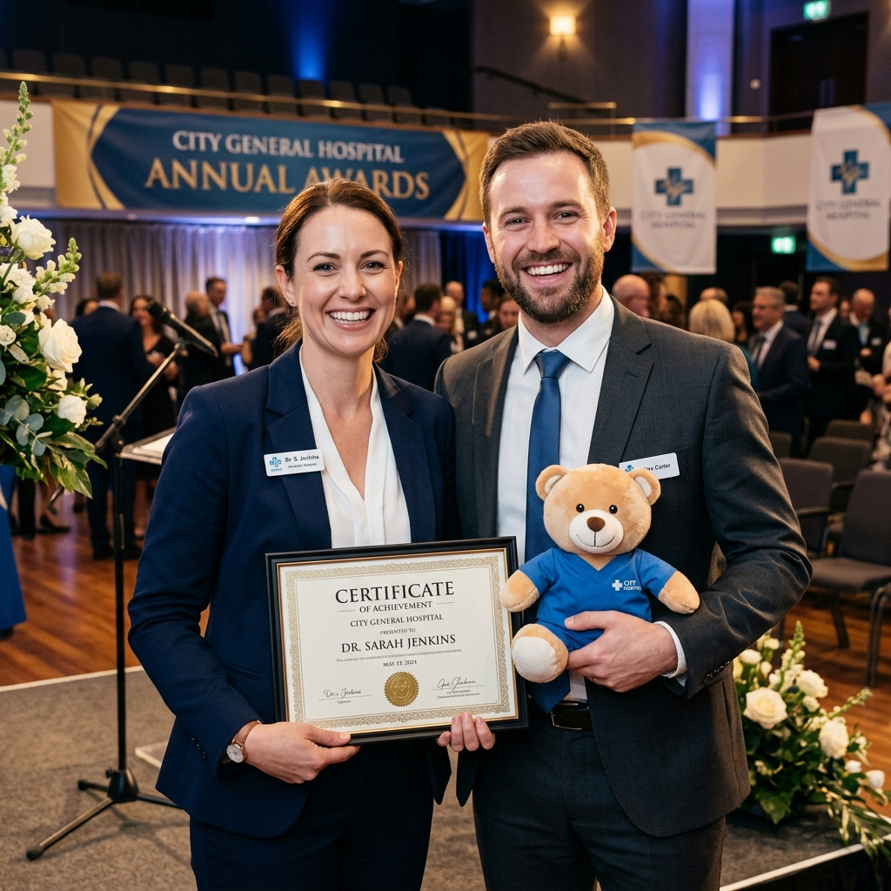
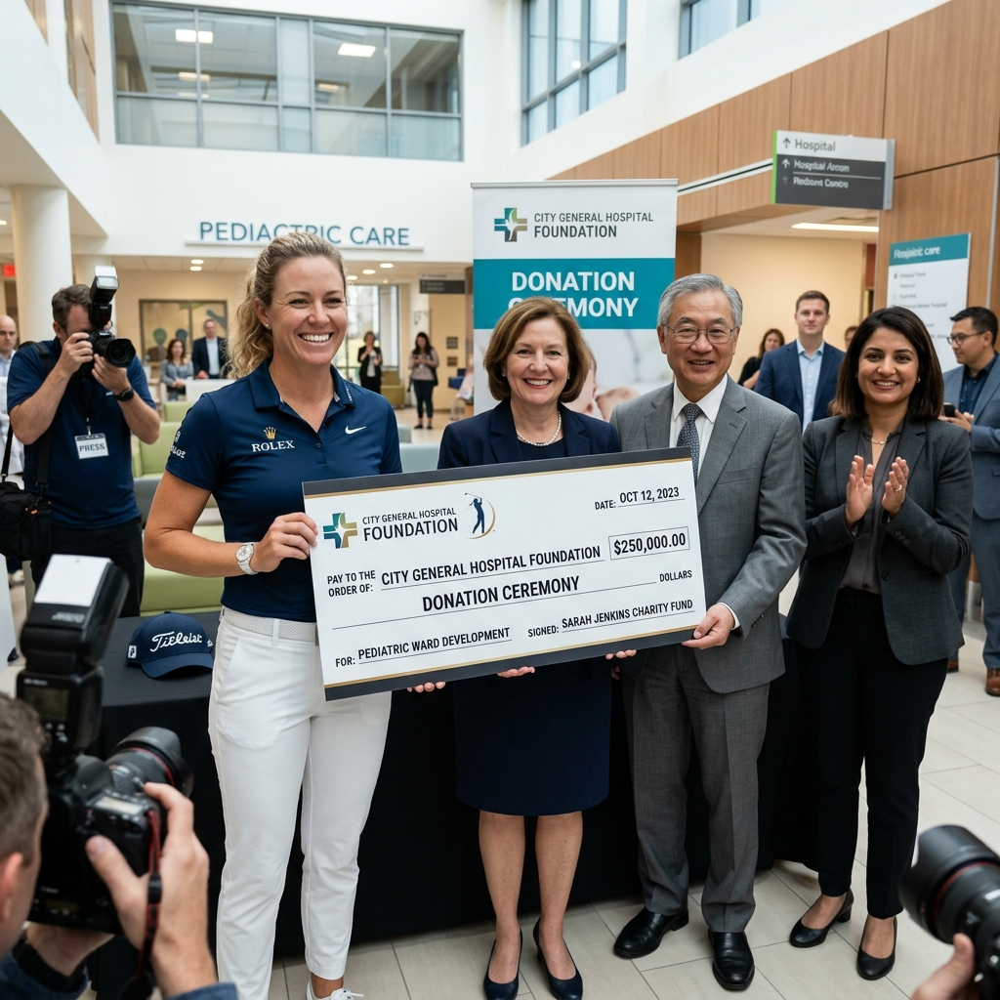

강원의료의
질과 품격을 높이는 병원
FRONTLINE MEDICINE
BEST CARE • HAPPY KANGWON • PERFECT HARMONY
가정의학과는 특정 연령이나 장기, 질병에 국한되지 않고 개인과 가족의 건강을 총체적이고 지속적으로 관리하는 진료과입니다. 일상에서 흔히 겪는 가벼운 증상부터 성인병 및 만성 질환 관리, 질병의 예방, 예방접종, 건강증진 상담 등을 폭넓게 담당하며, 환자의 고유한 신체·심리적 조화를 함께 돌보고 있습니다.
전문분야: 소아뇌성마비, 소아 운동 치료, 추간판 탈출증, 무릎 관절염, 테니스 엘보, 오십견, 석회성 건염, 기타 재활의학 전반


도면에 매칭된 번호와 진료실 이름 매칭 리스트입니다.

보도자료강원대학교병원이 고려대의료원과의 연계 체계를 공고히 다지며, 방송인 안현모 씨와 코미디언 홍인규 씨를 홍보대사로 신규 위촉하였습니다. 미래 헬스케어 비전을 향한 동행을 선포합니다.

발전기금프로골퍼 박성현 씨와 팬카페 '남달라' 회원들이 강원대학교병원 발전후원회에 취약계층 소아 환자 치료를 위한 기부금 5,000만 원을 쾌척하였습니다. 이 동행은 10년 동안 이어져 오고 있습니다.
차세대 스마트 헬스케어를 구현하기 위해 인공지능 기반 환자 맞춤형 정밀 의료 연구 조직을 발족했습니다. 빅데이터 통합 연동을 통해 한층 진일보한 의학 혁신이 진행됩니다.